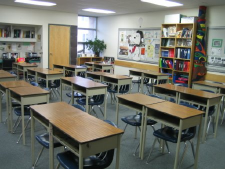

Registration

- Registration date: {{ site.registrationdate | date: '%B %d, %Y' }}
- Doors open at 2pm for new students, returning students at 3 pm.
- Campus: St. John's Ravenscout - 400 South Drive (Click here for directions)
- Parents/Guardians must fill out a registration form (available at the door or online)
- School fees are $360 for the year, cash or cheque only. Term payments are also available.
- Returning students must bring their report card from last year
- New students must bring a copy of their report card from their regular school and will write an entrance exam to determine placement
- All results for placement and class lists will be available on the first day of classes
{{ site.registrationdate | date: '%Y' }} Registration Form